Proof:The proof is quite easy using a bivariate change of variable. However, since that result will be proved in Analysis III, we shall omit the proof of this theorem here.[QED]
EXERCISE 1: Find $B(4,5).$ Remember that $\Gamma(n) = (n-1)!$ for $n\in{\mathbb N}.$
EXERCISE 2: Writing the factorials in terms of the Gamma function, express $\binom{10}{6}$ in terms of the Beta function
| 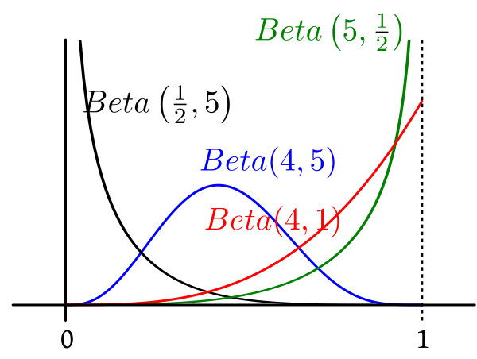 |
|---|
| A variety of shapes from the Beta family |
Proof: $$E(X) = \frac{1}{B(a,b)}\int_0^1 x\times x^{a-1} (1-x)^{b-1}\, dx = \frac{1}{B(a,b)}\int_0^1 x^{(a+1)-1} (1-x)^{b-1}\, dx = \frac{B(a+1,b)}{B(a,b)}.$$ Now we shall express the Beta functions in terms of the Gamma function to get $$\frac{B(a+1,b)}{B(a,b)} = \frac{\Gamma(a+1)\Gamma(b)}{\Gamma(a+b+1)}\times\frac{\Gamma(a+b)}{\Gamma(a)\Gamma(b)}.$$ We know that $\forall \alpha >0~~\Gamma(\alpha+1) = \alpha \Gamma(\alpha).$ Hence $\frac{\Gamma(a+1)}{\Gamma(a)}= a$ and $\frac{\Gamma(a+b)}{\Gamma(a+b+1)}=\frac{1}{a+b}.$ Hence the result. [QED]
EXERCISE 3: For particular values of $a,b$ we get the $Unif(0,1)$ distribution. Which values?
EXERCISE 4: If $X\sim Beta(a,b)$, then exactly one of the two statements is correct in general. Which one?
EXERCISE 5: If $X\sim Beta(a,b)$, then find $V(X).$
EXERCISE 6: If $X\sim Beta(a,b)$ then show that $1-X\sim Beta(b,a).$
| 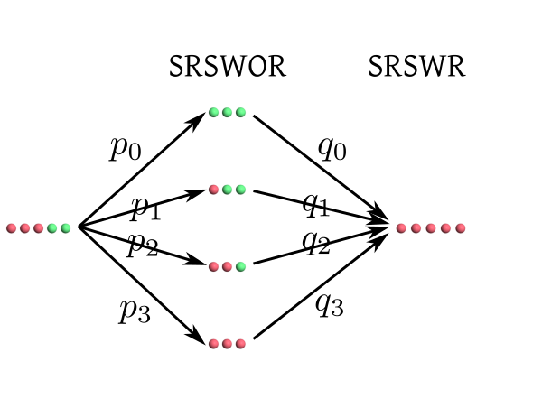 |
|---|
| Diagram for the above problem |
| 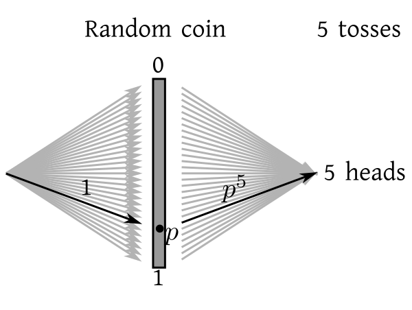 |
|---|
| Diagram with continuous sprays of arrows |
| 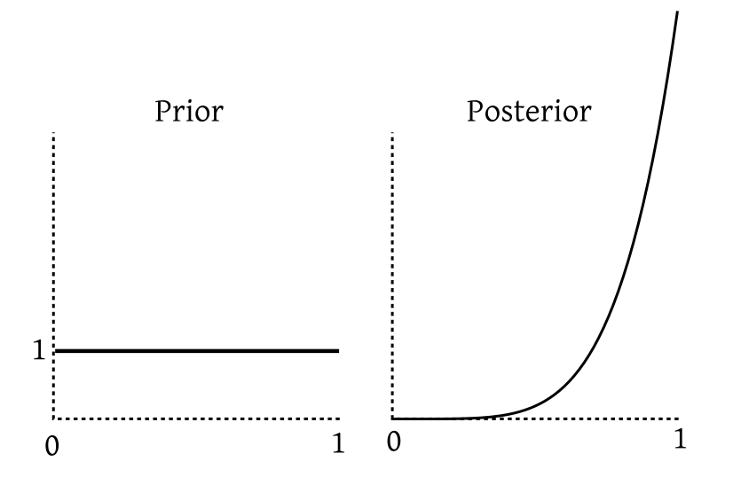 |
|---|
| After seeing the data our belief is concentrated more near 1. |
Beta is the conjugate prior family for Binomial.An exercise below asks you to prove this. For now let us toss the same coin 5 more times. Suppose now we get 4 tails and 1 head. If we carry out the same exercise again (but this time with $Beta(6,1)$ playing the role of the prior, and "1 head, 4 tails" as our data), we again get a Beta posterior that we plot below:
| 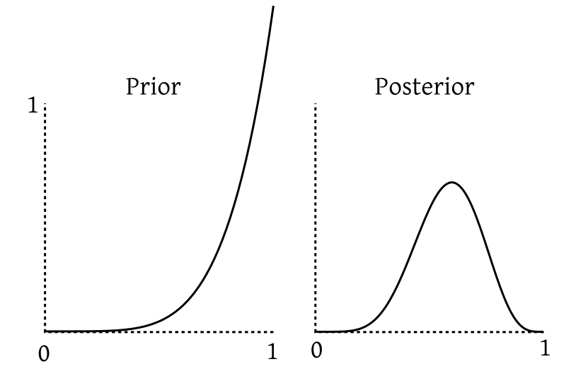 |
|---|
| Our belief is now peaked closer to the centre. |
EXERCISE 7: Find the posterior for $\Pi$ if the prior is $Beta(6,1)$ and the data consist of 1 head and 4 tails out of 5 independent tosses of the coin. The answer should be a Beta distribution with parameters that you are determine.
EXERCISE 8: Show that if $\Pi$ has prior $Beta(a,b)$ and our data consist of exactly $X$ heads out of $n$ tosses, then the posterior is again a Beta distribution. What are its parameters?
EXERCISE 9: Suppose that we have coin with $P(head)$ having prior $Unif(0,1).$ We toss the coin $n$ times independently and obtain exactly $X$ heads. Let $f(p)$ be the (continuous) density of the posterior. It is natural to estimate $p$ using the value where $f$ is the maximum. This is called the (maximum a posteriori) MAP estimator. Derive its formula in terms of $n$ and $X.$ Is it the same as the "usual" estimator $\frac Xn?$
Proof: $\int_0^\infty \frac{x}{1+x^2}dx\sim \int_0^\infty \frac 1xdx = \infty.$ [QED]
Proof:Needs techniques (complex contour integration/differentiation under intergal) beyond the present level.[QED]
EXERCISE 10: How can you generate a Cauchy random variable from a $Unif(0,1)$ random variable?
EXERCISE 11: Consider the unit semicircle shown below.
| 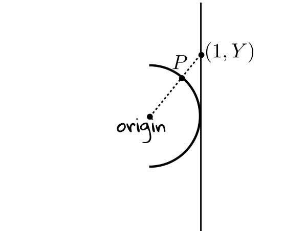 |
|---|
EXERCISE 12: If $X$ is a Cauchy random variable, then show that $\frac 1X$ is also a Cauchy random variable.
n = 10000 x= rcauchy(n) y=cumsum(x)/(1:n) plot(y,ty='l')This demonstration is theoretically justified using the following theorem.
Proof: This may be proved using Jacobians, or more directly using characteristic function. The characteristic function of $aX+(1-a)Y$ is $$E(e^{it(aX+(1-a)Y)}) = E(e^{itaX+it(1-a)Y}) = E(e^{itaX}\cdot e^{it(1-a)Y}) = E(e^{itaX})E(e^{it(1-a)Y}),$$ since $X,Y$ are independent. Now, we know that $E(e^{itX}) = E(e^{itY}) = e^{-|t|}.$ Hence $$ E(e^{itaX})E(e^{it(1-a)Y}) = e^{-|ta|})\times e^{-|t(1-a)|}) = e^{-|ta|-|t(1-a)|} = e^{-|t|},$$ since $a\in[0,1].$
This completes the proof. [QED] The next theorem, which is a simple corollary to this theorem, shows why $\bar X_n$ failed to converge to a number in our simulation of the law of large numbers.Proof: See the exercise below. [QED]
EXERCISE 13: Prove the above theorem using induction on $n.$ You may like to use the identity $$\bar X_n = \frac{(n-1)\bar X_{n-1} + X_n}{n}.$$
EXERCISE 14: If $X,Y$ are independent Cauchy random variables, and we take $a\not\in[0,1],$ then is it possible for $aX+(1-a)Y$ to have Cauchy distribution?
| 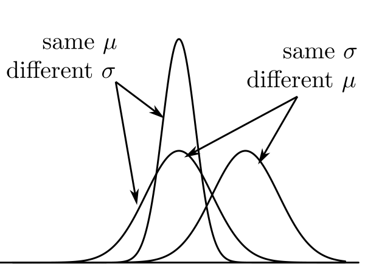 |
|---|
| $\mu$ controls centre, $\sigma$ controls spread |
Proof:Omitted.[QED]
To use this result in order to show that the total integral of the $N(\mu,\sigma^2)$ density is indeed 1, we proceed as follows. $$\int_0^\infty e^{-x^2/2}\, dx= \frac{1}{\sqrt2}\int_0^\infty t^{-1/2} e^{-t} \, dt$$ by using $t = x^2/2.$ This new integral is just $$\int_0^\infty t^{\frac 12-1} e^{-t} \, dt = \Gamma\left(\frac 12\right) = \sqrt\pi.$$ So $$\int_{-\infty}^\infty e^{-x^2/2}\, dx=2\int_0^\infty e^{-x^2/2}\, dx= \sqrt{2\pi}.$$ Hence we have shown that the $N(0,1)$ density integrates up to 1. To prove for any general $N(\mu,\sigma^2)$ we simply use the substitution $y = \frac{x-\mu}{\sigma}$ to reduce it to the $N(0,1)$ case. The letter lower case phi, $\phi$, is generally used for the $N(0,1)$ density, while its capital version $\Phi$ is reserved for the CDF. $$\Phi(x) = \int_{-\infty}^x \phi(t)\, dt$$ Louiville showed that $\Phi(x)$ cannot be expressed in terms of elementary functions (trigonometric, exponential, logarithmic, square root, cube root etc). However, its value may be computed numerically for any given $x.$Proof: Directly from Jacobian formula. [QED]
A corollary is the following theorem. The transformation from $X$ to $\frac{X-\mu}{\sigma}$ is called standardisation.Proof:Easy, and left as an exercise. Just one reminder. As a first step you should substitute $y=\frac{x-\mu}{\sigma}$ to arrive at $N(0,1).$ Now the expectation is given by the integral $$\frac{1}{2\sqrt\pi}\int_{-\infty}^\infty x e^{-x^2/2}\, dx.$$ Don't rush to the conclusion that this must be zero, because the integrand is an odd function. Here you are working with an improper integral. So you need to make sure that $\int_0^\infty x e^{-x^2/2}\, dx$ is finite before you can use the odd function argument. [QED]
Proof: As you have not formally done complex integration yet, all our characteristic function derivations are heuristic.
Here we can show directly that for any $s\in{\mathbb R}$ we have $E(e^{sX}) = e^{s^2/2},$ where $X\sim N(0,1).$ This is easily shown using a simple substitution. Now, if you replace $s$ with $it,$ you get the result. This replacement is justified using arguments from complex analysis beyond the present scope. [QED]EXERCISE 15: If $X\sim N(0,1),$ then express the following probabilities in terms of $\Phi(\cdot).$
EXERCISE 16: If $X\sim N(2,3^2),$ then express the following probabilities in terms of $\Phi(\cdot).$
EXERCISE 17: If $\Phi ^{-1}(0.95)=1.64$, then find $c\in{\mathbb R}$ such that $P(|X-1|>c) = 0.1 $ where $X\sim N(1,1^2).$
Proof:Next semester.[QED]
This theorem is a manifestation of statistical regularity. Whatever may the true distribution of the $X_i$'s be, if you average a large number of $X_i$'s you get close approximation to the normal distribution. This allows statistician to deal with averages of a large number of IID observations without knowing the true underlying distribution. Let's look at a typical example.EXAMPLE 1: If 40% of the population of a city supports a poll candidate, then what is the approximate probability that a random sample of 500 persons from the city will have at least 250 supporters?
SOLUTION: Here we think of the sampling procedure as 500 trials of the same random experiment: Pick a person at random from the population of the city. We shall assume that the trials are IID. Now here we are introducing an approximation: the first membr of the sample was drawn from the entire population, but since we generally sample without replacement in such a scenario, the second member of the sample was drawn from a population of size one less than in the case of the first member. So the radom experiment has actually changed, and they are not independent also. But since the population is large (much larger than 500), so we are ignoring both the non-identical and dependent nature and assuming IID. We also have a random variable: $$X(\omega) = \left\{\begin{array}{ll}1 &\text{if }\omega\mbox{ supports the candiate}\\ 0&\text{otherwise.}\end{array}\right.$$ Here$\omega$ is the person sampled. Each trial gives rise to one copy of this random variable, so we have $X_1,...,X_{500}$ IID $Bernoulli(0.4).$ This $0.4$ came from the 40% given in the problem. By CLT we have $$\frac{\sqrt n (\bar X_n-\mu)}{\sigma}\rightarrow N(0,1)$$ as $n\rightarrow \infty,$ where $\mu = E(X_i)$ and $\sigma^2 = V(X_i)< \infty.$ We shall write this as $$\bar X_n \stackrel{\bullet}{\sim} N\left(\mu,\frac{\sigma^2}{n}\right)$$ for large $n.$ Here $\stackrel\bullet\sim$ means "approximately distributed as". In our case, $\mu = 0.40$, $\sigma^2 = 0.4(1-0.4) = 0.24$ and $n=500.$ So $$\bar X_{500} \stackrel{\bullet}{\sim} N\left(0.40,\frac{0.24}{500}\right),$$ or $$\sum_1^n X_i \stackrel{\bullet}{\sim} N(0.40\times 500,0.24\times 500)\equiv N(200, 120).$$ Nowe we can find the required probability as $$P(\sum_1^{500} X_i \geq 200) \approx 1-\Phi\left(\frac{250-200}{\sqrt{500}}\right).$$ This probability may be obtained by looking up standard $N(0,1)$ tables or using R as1-pnorm((250-200)/sqrt(500))■ In this problem we knew the distribution of the $X_i$'s, but we never really made any use of it, except to compute $E(X_i)$ and $V(X_i).$
EXERCISE 18: [rossdistrib10.png]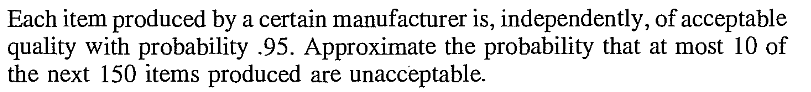
::EXERCISE 19: [rossdistrib8.png]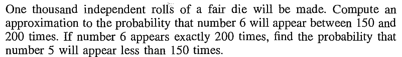
EXERCISE 20: [rossdistrib5.png]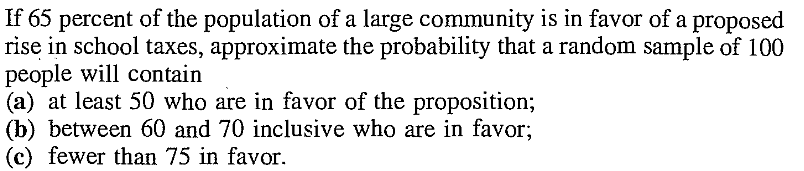
EXERCISE 21: If $X$ is a random variable with density proportional to $\exp((1-x)(3+4x))$ for $x\in{\mathbb R}$, then find the distribution of $X.$
EXERCISE 22: Let $\vec V = (V_1,V_2,V_3)$ have the joint distribution as in Maxwell's derivation. Consider $\vec U = \frac{\vec V}{\|\vec V\|}$, the unit vector along $\vec V.$ Describe the distribution of $\vec U.$
EXERCISE 23: If $X$ has density proportional to $e^{ax^2+bx+c}$ for $x\in{\mathbb R}$, for some constants $a,b,c$, then find $E(X)$ and $V(X).$
EXERCISE 24: [rossdistrib1.png]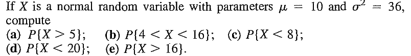
::EXERCISE 25: [rossdistrib2.png]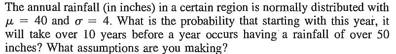
::EXERCISE 26: [rossdistrib3.png]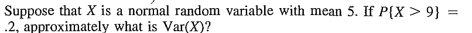
::EXERCISE 27: [rossdistrib4.png]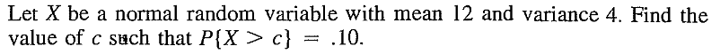
::EXERCISE 28: [rossdistrib6.png]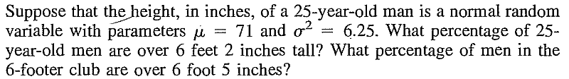
::EXERCISE 29: [rossdistrib7.png]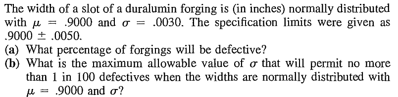
::EXERCISE 30: [rossdistrib9.png]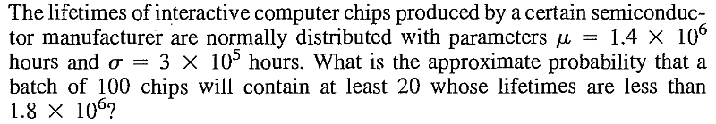
::EXERCISE 31: [rossdistrib11.png]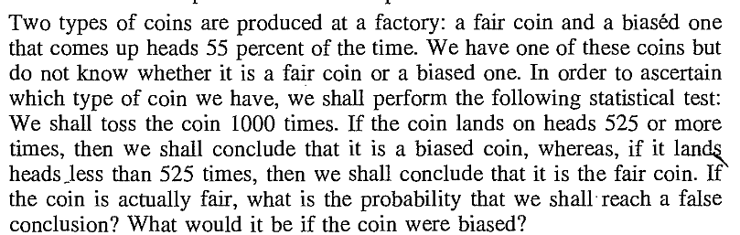
::EXERCISE 32: [rossdistrib12.png]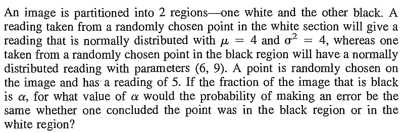
::EXERCISE 33: [rossdistrib18.png]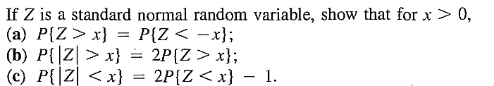
::EXERCISE 34: [rossdistrib28.png]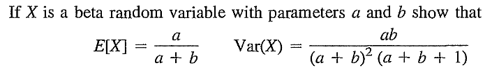
::EXERCISE 35: [rossdistrib29.png]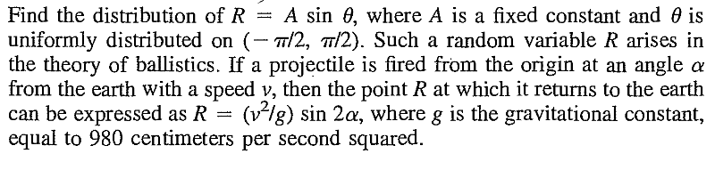
::EXERCISE 36: [rossdistrib30.png]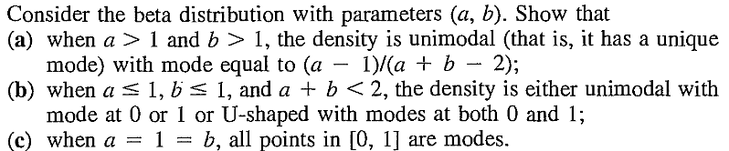
::EXERCISE 37: [rossdistrib31.png]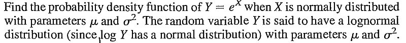
::EXERCISE 38: [rossdistrib32.png]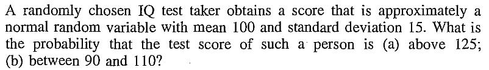
::
EXERCISE 39: [rossdistrib33.png]
EXERCISE 40: [rossdistrib34.png]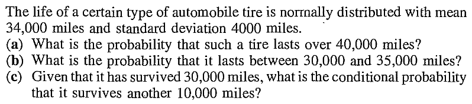
::EXERCISE 41: [rossdistrib35.png]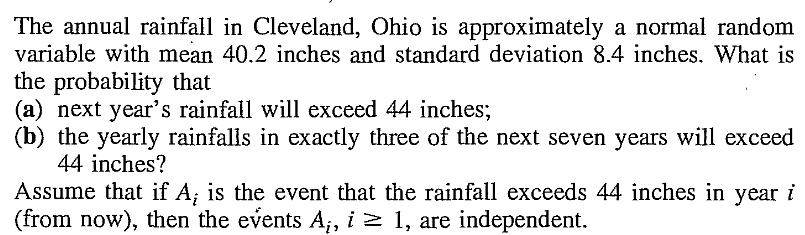
::EXERCISE 42: [rossdistrib37.png]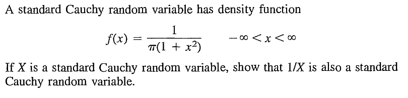
::
EXERCISE 43: [rosspdf15.png]
EXERCISE 44: [hpspdf23.png]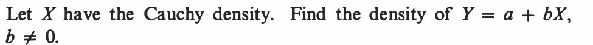
::EXERCISE 45: [hpspdf27.png]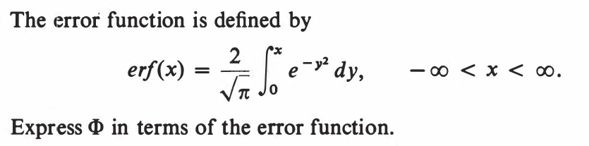
--- ::EXERCISE 46: [hpspdf28.png]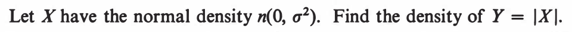
::EXERCISE 47: [hpspdf29.png]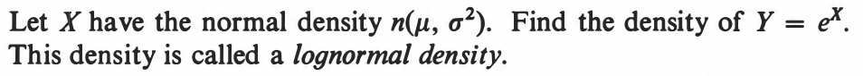
::EXERCISE 48: [hpspdf30.png]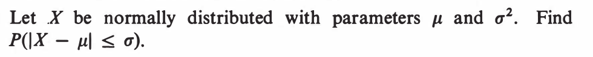
::EXERCISE 49: [hpspdf31.png]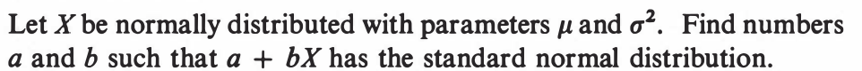
::EXERCISE 50: [hpspdf32.png]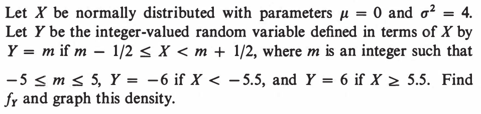
::EXERCISE 51: [hpspdf33.png]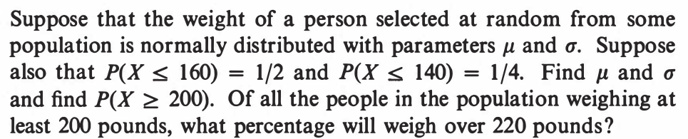
::EXERCISE 52: [hpspdf34.png]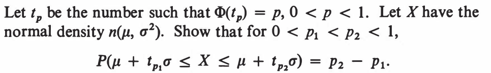
::EXERCISE 53: [hpspdf42.png]
::EXERCISE 54: [hpspdf43.png]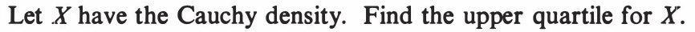
::EXERCISE 55: [hpspdf44.png]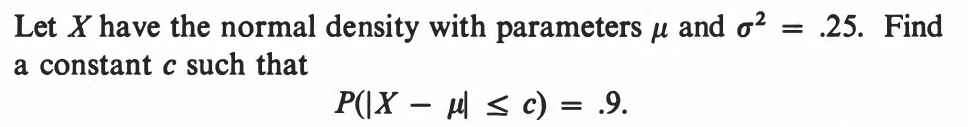
---- ::EXERCISE 56: [hpstrans3.png]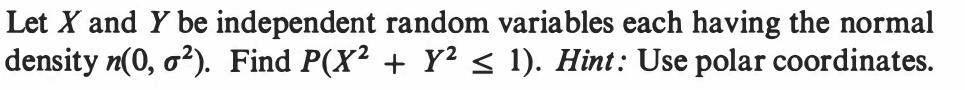
::EXERCISE 57: [hpstrans10.png]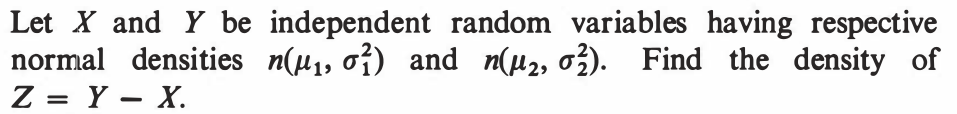
::EXERCISE 58: [hpstrans11.png]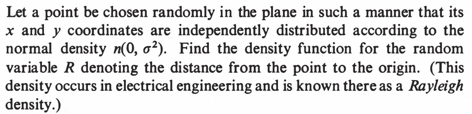
::EXERCISE 59: [hpstrans13.png]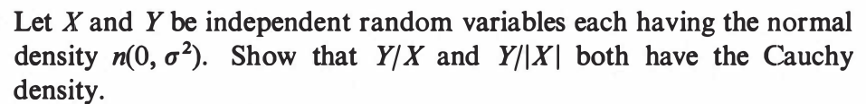
::
EXERCISE 60: [hpstrans17.png]
EXERCISE 61: [hpstrans20.png]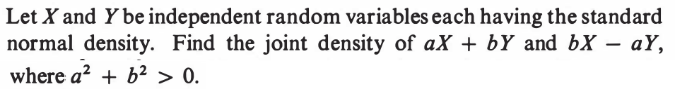
::EXERCISE 62: [hpstrans26.png]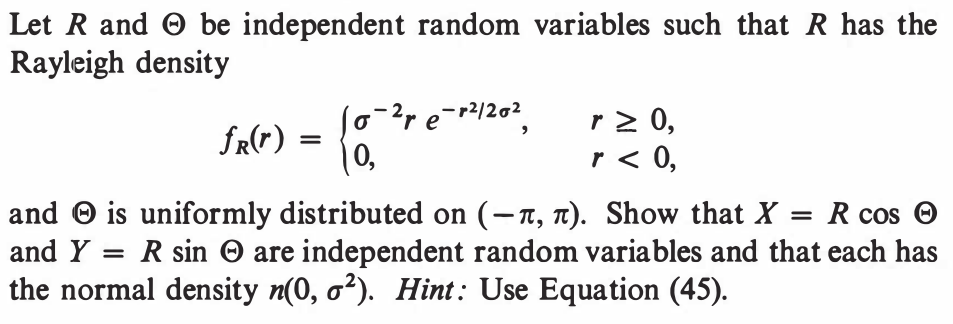
::EXERCISE 63: [wilks7.png]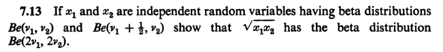
::EXERCISE 64: [wilks10.png]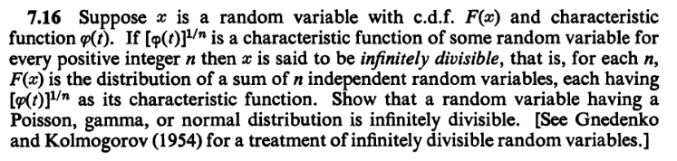